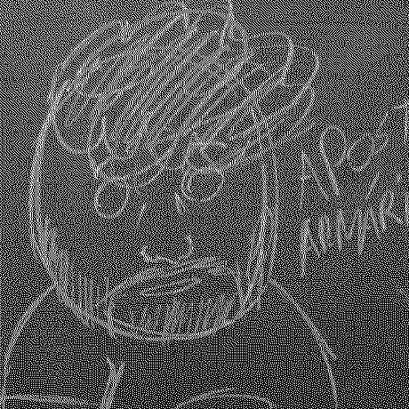

Quem sou eu?

Saudações, me chamo Luiz Antônio e tenho 15 anos.
Gosto de computação no geral, mas o que sempre me chamou mais atenção foi a área de sistemas e programação mais direcionada à aplicações para os tais; nunca me interessei muito por Web.
Tenho conhecimentos em Shell Script e estou começando a aprender C por meio do livro "C Completo e Total".
Falando de minha personalidade, eu poderia dizer que tenho "cabeça de boomer" por conta de meus gostos, que vão desde as minhas escolhas/customizações de DE/WM até meus gostos musicais.
Caso tenha perguntas adicionais, pode contactar-me.